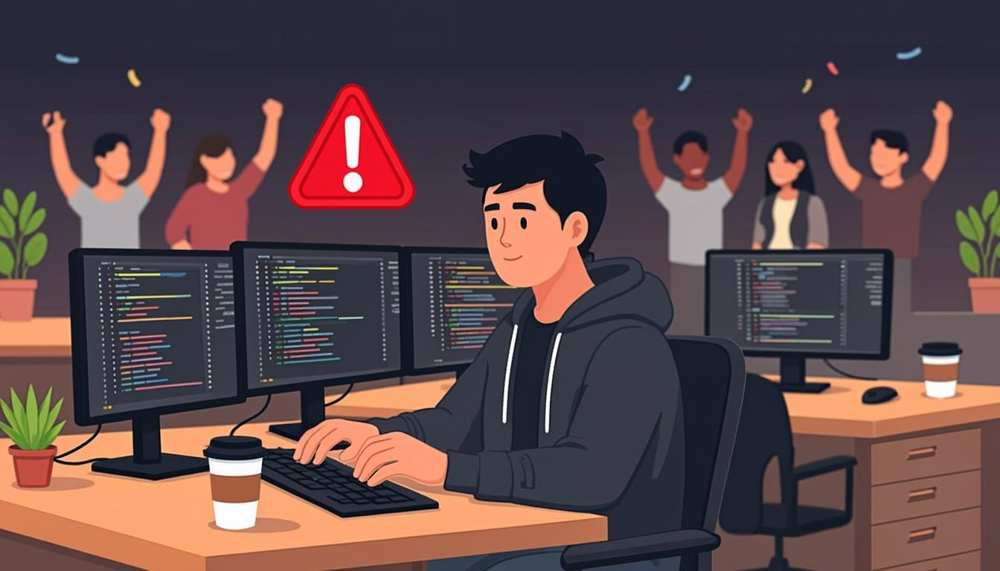

Warm-up
10 mincinema · Marvel · release nights🎧 Listen to the questions
❓ Three questions — click a card to open the sentence starters
Listening — The Night of the Release
12 minaudio + comprehension
🧩 Before you listen: 10 key words
Click a word — a definition and an example will open. The Russian gloss is there to check your understanding. Listen to the recording of all ten words.
🎧 Track 1 — The Night of the Release
🌍 Extension — BBC 6 Minute English: What makes a superhero?
From the yearly plan: What makes a superhero? ↗
Task: first listen — who is Chibatman? Second listen — note 3 verbs in the past and what was happening around them.
Reading — Studio Diary: The Morning After
8 mintext + verb spottingStudio Diary: The Morning After
On Saturday morning nobody at Harbour Lights was panicking. The hotfix had gone out at 2 a.m., the reviews were turning positive again, and the team was sleeping in. Dana arrived at ten, brought cake, and opened the stand-up with an unusual question: "So — what did we learn while everything was going wrong?"
The answers became the release post-mortem. While Tom was reading the crash logs, he noticed that the bug only appeared on older consoles. While the developers were rebuilding the level, the community team was answering every angry comment under the streamer's video — and the video became free advertising. "Players were watching us fix it live," Dana wrote in the diary, "and that built more trust than a perfect launch ever could." The team decided to repeat the drill: a QA rehearsal the night before every big release, while everyone else is still calm.
🌍 Extension — BBC Culture
From the yearly plan — choose any film-related piece: bbc.com/culture ↗
Find 2 sentences in the past and explain why each verb form was chosen: a finished event, or a background action?
Grammar — Past Simple vs Past Continuous
15 minrules + 4 exercisesPAST SIMPLE — the events of the story
- Completed actions in sequence: We launched at six. Players complained. We fixed it.
- Short actions that interrupt: Her game crashed while she was streaming.
- Markers: yesterday, last week, in 2021, then, after that, suddenly, at 23:40
PAST CONTINUOUS — the background
- Longer actions in progress: The team was celebrating in the kitchen.
- Parallel actions: While players were posting comments, Tom was reading the logs.
- Markers: while, when, at that moment, all evening, the whole night
⚙️ Mini-table — event or background?
| Sentence | Why? |
|---|---|
| We launched the update at six. | A completed event on the timeline — Simple. |
| At six we were opening the champagne. | An action in progress at that moment — Continuous. |
| Her game crashed while she was streaming. | Short event (Simple) interrupts a long action (Continuous). |
| While Tom was reading the logs, he found the bug. | Background (Continuous) + discovery event (Simple). |
| I knew it before anyone told me. | State verbs stay Simple even in the past: knew, believed, wanted. |
| They shipped the hotfix at 2 a.m. | One finished action with a time stamp — Simple. |
🎬 Video — BBC 6 Minute Grammar: Past simple and past continuous (6 min)
🔊 Shadowing — speak along with the speaker
Track A — the events (Past Simple), Track B — the background (Past Continuous). Listen to a sentence → repeat it out loud in the pause. Two loops per track.
Grammar → Speaking — the main section of the lesson
10 mingoal: events against a background🎙 Round 1 — The Night of the Release while + was doing
Tell a release-night story (real or from the listening) where something went wrong. Requirement: at least 2 sentences with while + Past Continuous and 3 events in the Past Simple. 90 seconds.
🎙 Round 2 — Retell a Marvel Film in 2 Minutes was doing when did
Retell the plot of your favourite Marvel film. Task from the plan: at least 3 constructions "was/were doing when + did". Example: Spider-Man was riding the ferry when the vulture attacked.
🩹 Round 3 — Correction Sprint (with your QA course in mind)
Read five sentences with typical mistakes (they sound like a real bug report from a QA course). Correct each one out loud and explain why. Click a card to see the fix.
⚡ Speed Drill — a past-tense marker every 5 seconds
Open a card and instantly build a true sentence about your work or life with that marker. Choose the form first: event or background?
Writing — what happened last week
5 min50–90 wordsModel answer — open it after your own version
Last week was the launch week. On Friday we shipped the winter update at six, and the whole team was celebrating in the kitchen by seven. While Tom was running his final smoke tests, a streamer crashed her game live in front of two thousand viewers. The developers built a hotfix while the community team was answering angry comments, and we shipped it at 2 a.m. The next morning the reviews were positive again. What did we learn? A calm QA rehearsal beats a heroic all-nighter.
Homework
≤ 30 minutes in total🧑🏫 Teacher notes
Goal: the student separates events (Past Simple) from background and parallel actions (Past Continuous) and uses the interruption formula was doing when + did without translation pauses.
Suggested flow: Warm-up: collect past forms, ask "event or background?" after each answer → Listening: the release-night story; ask for the timeline first, the background second → Reading: label six verb forms in the diary → Grammar: the mini-table is the heart; the video consolidates → Speaking: Round 2 (Marvel plot) is the fun engine of the lesson — let her prepare 30 seconds silently first.
Success criteria: Round 1 — 2 × while + Continuous and 3 Simple events; Round 2 — 3 × was doing when did; Round 3 — 5 corrections with reasons.
Error pocket: when + was doing for the interrupting event · while + Simple for the background · was + state verb (was knowing) · was/were agreement after "we/they".
Threads: Tom's QA rehearsal storyline returns in Lessons 6–8; the streamer story becomes the Module Test 2 text; the Marvel plot retelling prepares the narrative-tenses work of Lesson 7.